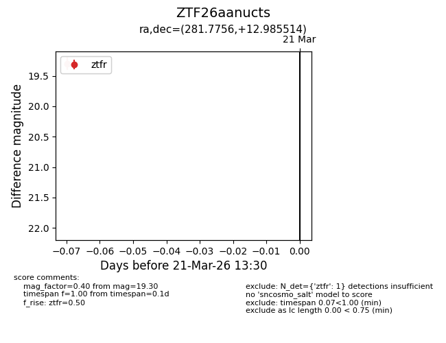
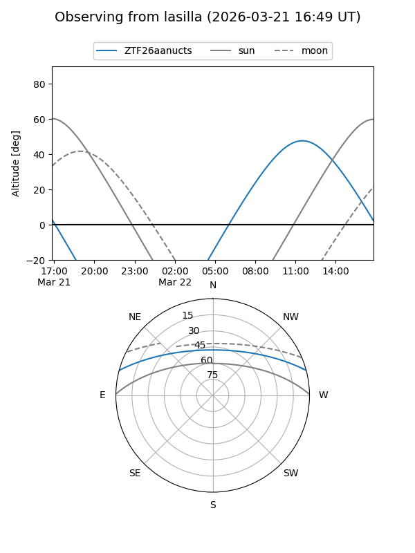
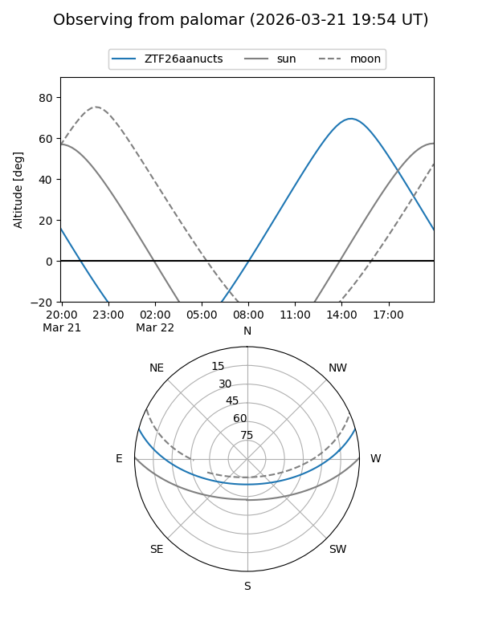
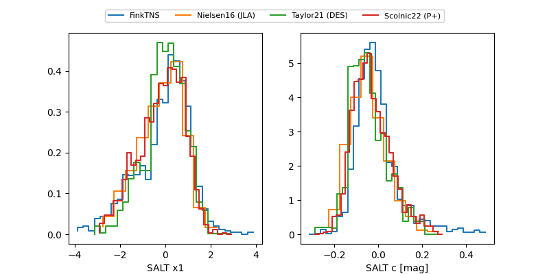

ZTF26aanucts
Target ZTF26aanucts at 2026-03-21 13:32
Aliases and brokers:
FINK: link
Lasair: link
ALeRCE: link
alt names
ZTF26aanucts (ztf,fink_ztf)
Coordinates:
equatorial (ra, dec) = 281.7756,+12.98551
equatorial (HMS+DMS) = 18:47:06.15,+12:59:07.85
galactic (l, b) = (44.0568,+6.82667)
Flags:
Photometry:
last ztfr=19.30
1 ztfr detections
Lightcurve

Visibility


Additional plots
